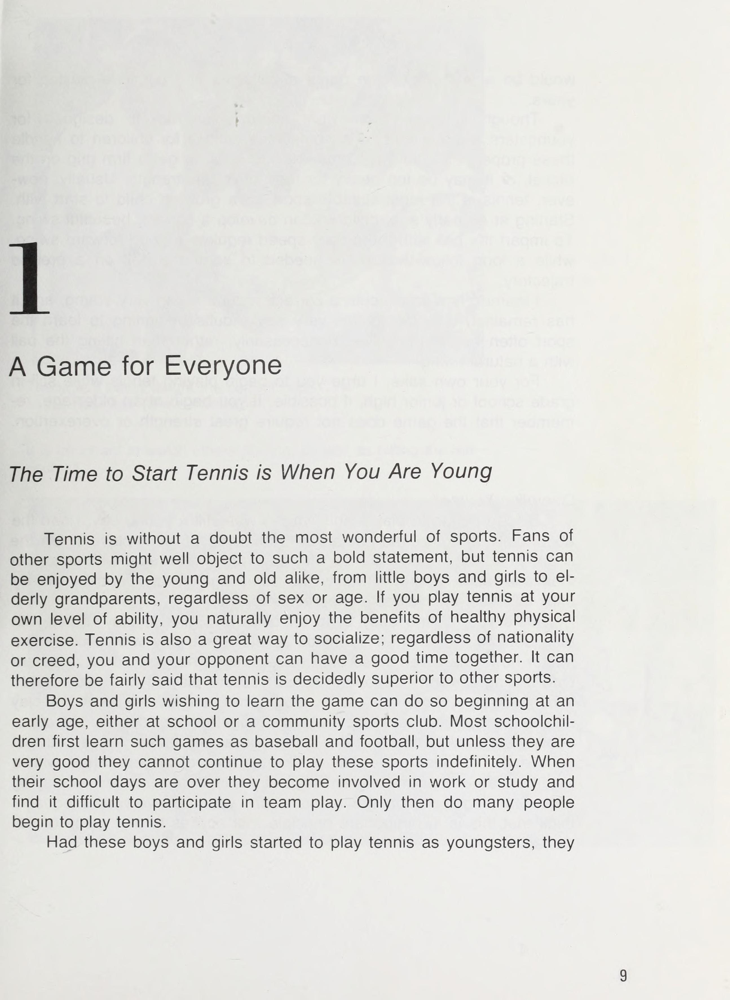
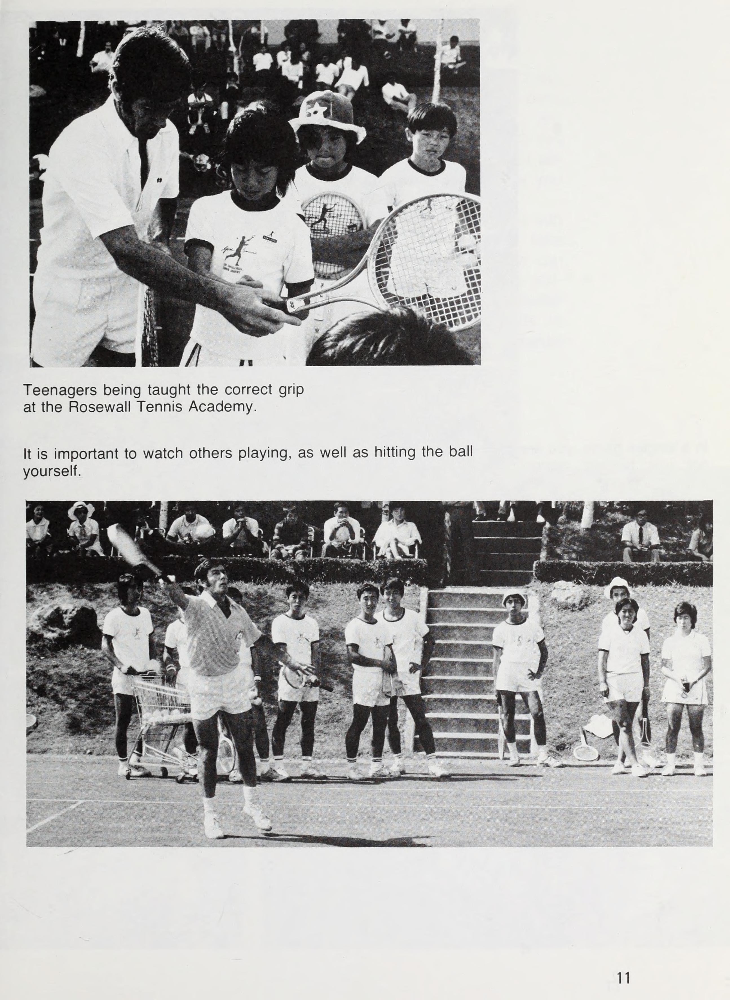
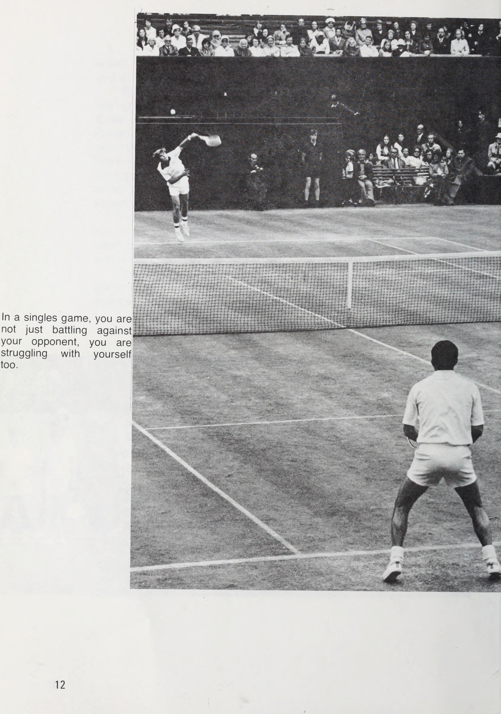
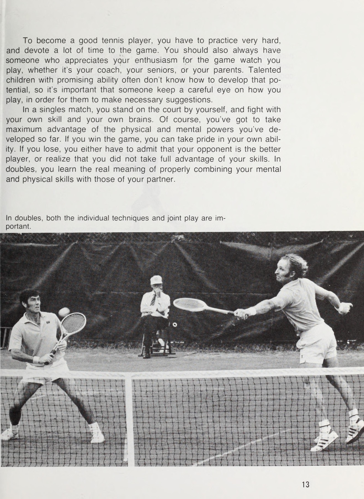
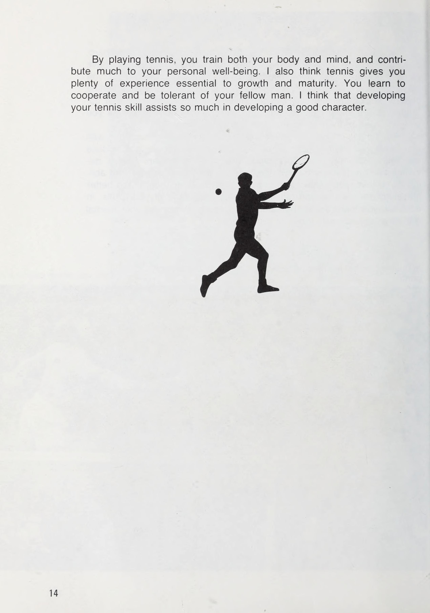
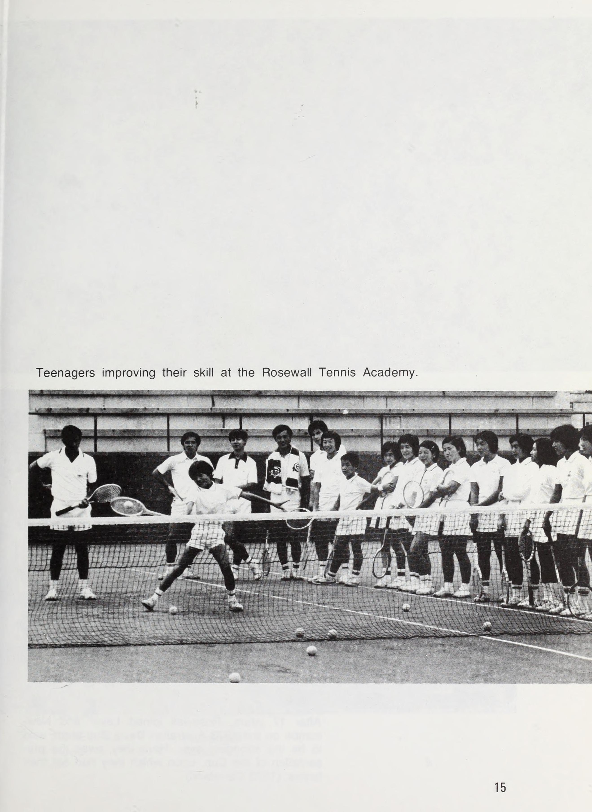
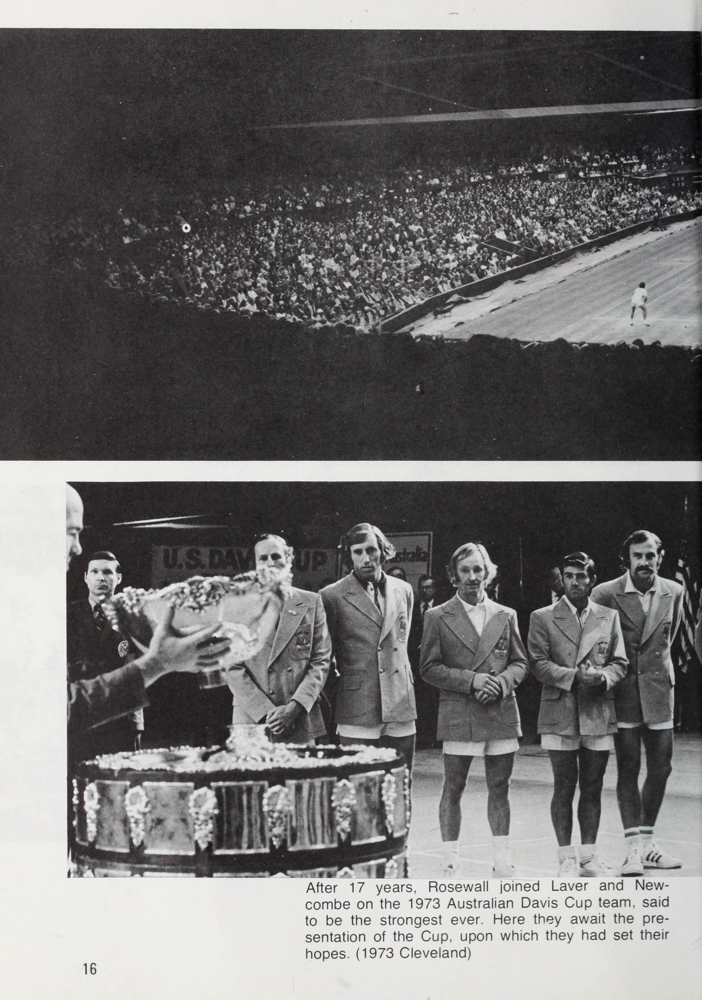

Phần 1: Triết Lý Quần Vợt Ken Rosewall, Nền Tảng Cầm Vợt & Bộ Chân Di Chuyển Huyền Thoại
Ken Rosewall (biệt danh "Muscles") được công nhận rộng rãi là một trong những tay vợt vĩ đại nhất mọi thời đại với sự nghiệp thi đấu đỉnh cao kéo dài hơn ba thập kỷ. Dù sở hữu thể hình khiêm tốn (khoảng 1m70), Rosewall đã giành 8 danh hiệu Grand Slam đơn, 9 Grand Slam đôi, cùng hàng chục danh hiệu chuyên nghiệp lớn nhờ vào sự hoàn hảo tuyệt đối của kỹ thuật cơ bản, khả năng đọc tình huống và bộ chân di chuyển thanh thoát, tiết kiệm năng lượng bậc nhất lịch sử.
Trong cuốn sách kinh điển này, Ken Rosewall đúc kết toàn bộ bí quyết thi đấu và triết lý sống còn trên sân đấu: Quần vợt không đơn thuần là việc tung ra những cú đánh bạo lực, mà là nghệ thuật làm chủ nhịp điệu, thăng bằng cơ thể và tính kỷ luật thép trong từng đường bóng.
1. Triết Lý Thi Đấu & Kỷ Luật Bản Thân (Tennis Philosophy & Self-Discipline)
Theo Ken Rosewall, sự khác biệt lớn nhất giữa một tay vợt giỏi và một nhà vô địch vĩ đại nằm ở tính kỷ luật tự giác. Kỷ luật không bắt đầu khi bạn bước vào trận chung kết, mà bắt đầu từ khoảnh khắc bạn thức dậy, cách bạn buộc dây giày, sự tập trung trong từng cú chạm bóng khởi động và thái độ tôn trọng đối thủ cũng như mặt sân.
Rosewall nhấn mạnh rằng người chơi cần bắt đầu tiếp cận quần vợt với một tâm thế cởi mở, sẵn sàng học hỏi từ những điều nhỏ nhất. Nền tảng kỹ thuật vững chắc được xây dựng từ sự lặp lại kiên nhẫn, chứ không phải từ những lối tắt ngắn hạn.

2. Kỹ Thuật Cầm Vợt Chuẩn Mực: Bước Đi Tiên Quyết (The Grips)
Ken Rosewall thi đấu trong kỷ nguyên vợt gỗ và thời kỳ chuyển giao sang vợt kim loại, nơi độ chính xác của mặt vợt là yếu tố quyết định sinh tử. Ông chủ trương sử dụng các kiểu cầm vợt cổ điển mang tính cơ bản và hiệu quả cao nhất:
- Kiểu Cầm Vợt Thuận Tay (Eastern Forehand Grip): Đặt lòng bàn tay áp sát vào mặt phẳng số 3 của cán vợt. Kiểu cầm này cho phép truyền lực thẳng trực tiếp qua tâm bóng, tạo ra quỹ đạo bóng sâu, căng và kiểm soát điểm tiếp xúc phía trước cơ thể một cách tự nhiên.
- Kiểu Cầm Vợt Trái Tay (Eastern Backhand Grip): Xoay khớp gốc ngón trỏ về mặt phẳng số 1 hoặc đỉnh cán vợt. Đây là chiếc chìa khóa vàng mở ra cú backhand slice trứ danh của Rosewall, cho phép mặt vợt tiếp xúc bóng mượt mà và tạo độ xoáy cuộn sắc lẹm.
- Kiểu Cầm Vợt Continental (The Universal Grip): Đặt khớp ngón trỏ tại cạnh vát số 2. Được Rosewall ứng dụng triệt để cho giao bóng, các quả bắt lưới (forehand và backhand volley), cắt bóng phòng thủ và đánh bóng nửa nảy (half-volley).
Rosewall đặc biệt lưu ý: Người chơi nghiệp dư thường mắc sai lầm siết cán vợt quá chặt, khiến cơ cẳng tay bị căng cứng và làm mất đi cảm giác bóng mềm mại. Cán vợt chỉ nên được giữ với áp lực vừa phải (mức 4 đến 5 trên thang điểm 10), và chỉ siết nhẹ ngay tại thời điểm tiếp xúc bóng.
3. Tư Thế Sẵn Sàng & Vai Trò Của Đôi Mắt (Ready Stance & The Eyes)
Tư thế mở sẵn sàng là vị trí xuất phát cho mọi pha bóng thành công. Hai chân mở rộng hơn vai một chút, đầu gối hơi chùng xuống để hạ thấp trọng tâm, trọng lượng cơ thể phân bổ đều trên ức bàn chân, gót chân hơi nhấc nhẹ khỏi mặt sân.
Hai tay giữ vợt phía trước ngực, tay không thuận đỡ nhẹ vào cổ vợt để chia sẻ sức nặng và sẵn sàng hỗ trợ chuyển đổi kiểu cầm vợt nhanh chóng. Mắt luôn khóa chặt vào bóng ngay từ khi bóng rời khỏi mặt vợt của đối phương.
Rosewall chỉ ra: Rất nhiều người chơi nhìn bóng quá muộn. Đôi mắt phải đọc được đường xoáy, góc phóng và độ sâu của quả bóng ngay từ một phần ba quỹ đạo đầu tiên, từ đó kích hoạt phản xạ của đôi chân trước khi não bộ kịp suy nghĩ phức tạp.

4. Nghệ Thuật Di Chuyển Chân Của Ken Rosewall (Mastering Footwork)
Bộ chân của Ken Rosewall được ví như điệu múa ba lê trên sân quần vợt. Ông không bao giờ có vẻ vội vã, bởi vì ông luôn di chuyển sớm hơn đối thủ một nhịp. Bí quyết nằm ở ba nguyên tắc di chuyển cốt lõi:
- Bước Tách Nhẹ Nhàng (Split-Step Timing): Thực hiện cú nhún tách chân đồng thời với thời điểm đối phương tiếp xúc bóng, giúp cơ bắp tích lũy thế năng đàn hồi và sẵn sàng bứt tốc theo bất kỳ hướng nào.
- Các Bước Điều Chỉnh Nhỏ (Micro-Adjustment Steps): Khi tiếp cận bóng, thay vì bước những bước sải dài làm mất thăng bằng, Rosewall sử dụng liên tục các bước dậm chân nhỏ và nhanh để căn chỉnh cự ly tiếp xúc bóng hoàn hảo đến từng centimet.
- Phục Hồi Vị Trí Ngay Lập Tức (Recovery Footwork): Không bao giờ đứng chiêm ngưỡng cú đánh của mình. Ngay khi vợt kết thúc động tác đưa theo, chân sau lập tức đẩy mạnh để đưa cơ thể trở lại trung tâm kiểm soát hình học của sân đấu.
Phần 2: Tuyệt Kỹ Đánh Bóng Cuối Sân: Forehand Vững Chắc & Backhand Slice Huyền Thoại
Trong lịch sử hơn một thế kỷ của môn quần vợt, cú đánh trái tay (backhand) của Ken Rosewall được coi là một kiệt tác hoàn hảo bậc nhất. Dù đối đầu với những gã khổng lồ giao bóng sấm sét như Pancho Gonzales hay những tay vợt đánh xoáy vũ bão của kỷ nguyên mở, cú cắt bóng trái tay của Rosewall luôn là một pháo đài bất khả xâm phạm.
Phần này phân tích chi tiết cấu trúc cơ học của cú thuận tay chuẩn xác và giải mã bí quyết tạo nên cú backhand slice trứ danh đã đưa Ken Rosewall vào ngôi đền huyền thoại.
1. Cú Thuận Tay Chuẩn Mực & Đơn Giản (The Classic Forehand)
Nguyên lý cốt lõi trong cú thuận tay của Ken Rosewall là sự tối giản và tính nhất quán tuyệt đối. Ông loại bỏ mọi động tác thừa thãi để đảm bảo cú đánh có thể lặp lại chính xác hàng nghìn lần dưới áp lực thi đấu gay gắt:
- Xoay Vai Chuẩn Bị Sớm (Early Shoulder Turn): Ngay khi nhận diện bóng sang phía thuận tay, Rosewall lập tức xoay cả khối vai và thân trên sang bên. Động tác xoay vai này tự động kéo cây vợt ra sau mà không cần dùng lực cánh tay độc lập.
- Mở Vợt Gọn Gàng (Compact Backswing): Không sử dụng những vòng cung mở vợt quá lớn (loop) dễ bị trễ nhịp trước bóng nhanh. Vợt được đưa về sau ở tầm ngang hông với đầu vợt hơi dựng lên, sẵn sàng đón đầu đường bóng bay tới.
- Chuyển Dịch Trọng Tâm Nhịp Nhàng (Weight Transfer): Bước chân trước vào sân, chuyển dần trọng lượng từ chân sau sang chân trước ngay tại khoảnh khắc tiếp xúc bóng. Lực đánh không đến từ cơ bắp cánh tay mà sinh ra từ sự dịch chuyển khối lượng toàn bộ cơ thể.
- Đưa Vợt Theo Bóng Tự Nhiên (Follow-Through): Sau khi chạm bóng ở phía trước hông, mặt vợt tiếp tục đẩy xuyên qua bóng theo hướng mục tiêu trước khi kết thúc êm ái ngang vai đối diện.

2. Giải Mã Cú Backhand Slice Huyền Thoại Của Ken Rosewall

Cú cắt trái tay của Ken Rosewall không phải là một cú đánh phòng thủ thụ động, mà là một thứ vũ khí tấn công vô cùng hiểm hóc. Bóng từ vợt của Rosewall bay rất căng, cạo sát mép lưới, và khi chạm đất sẽ chuồi đi rất nhanh ở tầm cực thấp, buộc đối thủ phải cúi gập người đánh bóng lên trong thế bị động.
Để thực hiện cú backhand slice đạt chuẩn Rosewall, người chơi cần tuân thủ nghiêm ngặt chuỗi động tác sau:
- Chuẩn Bị Và Tư Thế Chân Đóng (Closed Stance Preparation): Xoay vai sâu về phía sau đến mức lưng hơi hướng về phía đối thủ. Chân phải (đối với người thuận tay phải) bước chéo lên phía trước, tạo thành một trục thăng bằng vững chãi như bàn thạch.
- Vị Trí Vợt Ban Đầu (High Racket Preparation): Cây vợt được nâng cao lên ngang tai hoặc vai trái, với tay trái giữ chặt cổ vợt để định vị và giữ mặt vợt hơi mở nhẹ.
- Quỹ Đạo Đánh Từ Cao Xuống Thấp Rồi Xuyên Qua (High-to-Low-to-Through): Vợt di chuyển dốc chéo từ trên xuống dưới để đón bóng. Ngay tại điểm tiếp xúc phía trước hông trước, mặt vợt cọ xát vào đáy bóng tạo độ xoáy ngược, đồng thời tiếp tục đẩy thẳng về phía trước theo hướng bay mong muốn thay vì giật cụt lại.
- Cân Bằng Thân Người Bằng Tay Không Thuận: Khi tay phải vung vợt ra trước, tay trái đồng thời bung mạnh về phía sau. Động tác mở hai tay như đôi cánh này giúp giữ cho thân trên không bị xoay sớm, bảo toàn sự ổn định tuyệt đối của mặt phẳng tiếp xúc.
3. Kiểm Soát Điểm Rơi & Hướng Bóng (Depth & Directional Control)
Ken Rosewall hiếm khi đánh bóng bừa bãi ra giữa sân. Ông sử dụng cú slice với độ chính xác của một bác sĩ phẫu thuật:
- Cú Slice Chéo Sân Sâu (Deep Crosscourt Slice): Bóng cắm sát vạch cuối sân đối phương, đẩy họ lùi sâu ra sau và tước đoạt góc tấn công.
- Cú Cắt Dọc Dây Sắc Nhọn (Down-the-Line Knife): Bất ngờ thay đổi hướng đánh dọc theo đường biên khi đối phương di chuyển hở sườn, tạo ra tình huống bóng chuồi cực kỳ khó chống đỡ.
- Cắt Bóng Dìm Xuống Chân (Low Dipper at the Net Rusher): Khi đối thủ tràn lên lưới, Rosewall không vội vàng tìm cú passing shot quá mạnh, mà thả một đường bóng xoáy ngược chìm sâu ngay dưới mũi giày của họ, buộc họ phải tung ra quả volley khó khăn.
Phần 3: Kỹ Thuật Lưới Toàn Diện: Volley Chuẩn Mực, Half-Volley, Giao Bóng & Đập Bóng Trên Không
Dù nổi tiếng với những cú đánh bóng cuối sân đầy ma thuật, Ken Rosewall là một bậc thầy thực sự trong nghệ thuật giao bóng lên lưới (serve-and-volley) và chiếm lĩnh mặt lưới. Trong kỷ nguyên thi đấu trên mặt sân cỏ nhanh, khả năng xử lý bóng trên không và kiểm soát khu vực gần lưới là điều kiện tiên quyết để bước lên bục vinh quang.
Phần này trình bày các chỉ dẫn kỹ thuật tinh túy của Ken Rosewall về các cú bắt lưới (volley), kỹ năng phòng thủ nửa nảy (half-volley), giao bóng chiến thuật và cú đập bóng dứt điểm trên cao (smash).
1. Nguyên Tắc Vàng Của Cú Bắt Lưới (The Art of the Volley)
Ken Rosewall khẳng định: Sai lầm phổ biến nhất của người chơi nghiệp dư khi lên lưới là cố gắng vung vợt quá rộng để đánh mạnh. Cú bắt lưới thực chất là một động tác chặn và đẩy dứt khoát (punch), mượn lực từ tốc độ bóng của đối phương.
- Không Có Động Tác Mở Vợt Ra Sau (Zero Backswing): Đầu vợt luôn được giữ ở phía trước mắt. Khi bóng bay tới, chỉ cần xoay nhẹ vai để đưa mặt vợt vào đường bay của quả bóng mà không được kéo vợt ra sau vai.
- Bước Chân Đối Diện Chặn Bóng: Khi bắt bóng thuận tay, bước chân trái chéo lên trước; khi bắt bóng trái tay, bước chân phải dứt khoát về phía bóng. Trọng lượng cơ thể lao tới tạo ra lực nén mạnh mẽ vào quả bóng.
- Hạ Thấp Bằng Đầu Gối Thay Vì Gập Lưng: Với những quả bóng thấp dưới mép lưới, Rosewall luôn uốn cong hai đầu gối sâu để đưa mắt ngang tầm bóng. Việc gập lưng cúi người sẽ làm mất thăng bằng và khiến mặt vợt bị chúc xuống đất.
- Cổ Tay Thép (Rock-Solid Wrist): Cổ tay phải được khóa chặt tuyệt đối ở góc vuông hoặc hơi hướng lên trên so với cẳng tay. Bất kỳ sự rung lắc lỏng lẻo nào của cổ tay cũng sẽ làm quả volley bay chệch hướng hoặc rúc lưới.

2. Kỹ Thuật Đánh Bóng Nửa Nảy (The Half-Volley)
Khu vực giữa sân (thường gọi là no-man's land) là nơi người chơi dễ bị tổn thương nhất bởi những quả bóng rơi ngay dưới chân. Cú half-volley của Ken Rosewall là một nghệ thuật phòng thủ đỉnh cao:
3. Giao Bóng Chuẩn Xác: Điểm Rơi Quan Trọng Hơn Sức Mạnh (Service Mastery)
Không sở hữu chiều cao lý tưởng để tung ra những quả giao bóng sấm sét như các đối thủ đương thời, Ken Rosewall biến cú giao bóng của mình thành một công cụ định vị chuẩn xác đến từng milimet:
- Độ Ổn Định Tuyệt Đối Của Quả Tung Bóng (The Ball Toss): Quả bóng được nâng lên từ tốn bằng các đầu ngón tay thẳng, không xoay xoắn, đưa lên điểm cao nhất ở phía trước bên phải (đối với người thuận tay phải). Vị trí tung bóng quyết định hoàn toàn chất lượng cú giao.
- Nhịp Điệu Chuyển Động Mượt Mà (Smooth Rhythm): Chuyển động phối hợp nhịp nhàng giữa đầu gối nhún xuống, vai nghiêng và cánh tay vung lên theo một đường cong liên tục, không bị ngắt quãng hay giật cục.
- Cú Giao Bóng Xoáy Cắt (The Slice Serve): Vũ khí sở trường của Rosewall. Bằng cách chém nhẹ vào sườn ngoài bên phải quả bóng, ông tạo ra quỹ đạo bóng cuộn cong sắc nét, kéo đối thủ văng ra khỏi biên sân để mở toang phần sân trống cho pha ghi điểm tiếp theo.

4. Cú Đập Bóng Trên Không (Mastering the Overhead Smash)
Cú đập bóng trên không là đòn kết liễu tối hậu khi đối phương tung ra cú lốp bóng giải nguy. Ken Rosewall yêu cầu sự chính xác và an toàn tuyệt đối:
- Xoay Thân Nghiêng Ngay Lập Tức: Ngay khi nhận diện quả lốp bóng, không lùi thẳng lưng mà lập tức xoay nghiêng người sang bên và di chuyển bằng các bước trượt ngang (side-shuffle steps).
- Chỉ Tay Không Thuận Lên Bóng: Tay trái giơ cao chỉ thẳng vào quả bóng trên không trung để vừa định vị không gian, vừa giữ thăng bằng cho bờ vai.
- Đập Bóng Tại Điểm Cao Nhất: Vươn thẳng cánh tay tiếp xúc bóng ở phía trước trán, gập cổ tay dứt khoát để dìm bóng xuống sân với góc dốc nguy hiểm.
- Cú Đập Bóng Sau Khi Nảy (The Ground Smash): Đối với những quả lốp quá cao và sâu, Rosewall khuyên người chơi nên để bóng nảy xuống đất rồi mới thực hiện cú đập nhằm kiểm soát nhịp điệu và không gian tốt hơn.
Phần 4: Nghệ Thuật Cú Đánh Tinh Tế, Chiến Thuật Thi Đấu & Bí Quyết Trường Thọ Thể Thao
Sự nghiệp của Ken Rosewall là một kỷ lục phi thường về sự bền bỉ: Ông giành chức vô địch Grand Slam đầu tiên năm 1953 (Úc Mở rộng ở tuổi 18) và giành Grand Slam cuối cùng năm 1972 (ở tuổi 37), thậm chí còn lọt vào chung kết Wimbledon và Mỹ Mở rộng năm 1974 khi đã 39 tuổi. Để duy trì phong độ đỉnh cao suốt hơn hai thập kỷ đối đầu nhiều thế hệ siêu sao, Rosewall đã kết hợp một tư duy chiến thuật sắc sảo cùng chế độ chăm sóc thể lực hoàn hảo.
Phần kết này khám phá nghệ thuật các cú đánh tinh tế (lob và drop shot), chiến lược làm chủ trận đấu và triết lý rèn luyện thể chất bền bỉ của huyền thoại người Úc.
1. Nghệ Thuật Lốp Bóng & Cú Bỏ Nhỏ Tinh Tế (The Lob and The Drop Shot)
Hai cú đánh này thể hiện cảm giác bóng tuyệt đỉnh của Ken Rosewall, có khả năng bẻ gãy nhịp độ trận đấu và trừng phạt những đối thủ quá hung hăng:
- Cú Lốp Bóng Phòng Thủ (Defensive Lob): Khi bị đối phương ép góc hiểm hóc ra xa sân, Rosewall tung ra cú lốp bóng cầu vồng thật cao và sâu về góc cuối sân đối phương. Đường bóng này mua lại từ 3 đến 5 giây quý giá để ông di chuyển trở lại trung tâm sân đấu và tái thiết lập thế trận phòng ngự.
- Cú Lốp Bóng Tấn Công (Offensive Lob): Khi đối thủ bám quá sát mép lưới để chờ bắt volley, Rosewall sử dụng một cú lốp bóng nhanh với quỹ đạo thấp vừa đủ qua đầu vợt đối phương nhưng cắm sâu xuống góc sân, khiến họ không kịp quay đầu lùi lại.
- Cú Bỏ Nhỏ Bất Ngờ (The Disguised Drop Shot): Bí mật của cú bỏ nhỏ nằm ở sự ngụy trang. Động tác chuẩn bị của Rosewall hoàn toàn giống một cú cắt trái tay hoặc thuận tay sâu cuối sân. Chỉ đến phân số giây cuối cùng trước khi chạm bóng, ông mới thả lỏng bàn tay và nhẹ nhàng đệm vào đáy bóng, khiến bóng rơi êm như chiếc lá ngay sát mép lưới và nảy hai lần trước khi đối thủ kịp phản ứng.

2. Đọc Trận Đấu & Chiến Lược Thi Đấu Thông Minh (Tactical Acumen)
Ken Rosewall không bước vào sân với một kế hoạch mù quáng. Ông là một nhà cờ vua trên sân đất nện, sân cỏ và sân cứng:
- Tìm Điểm Yếu Nhưng Đánh Vào Điểm Mạnh Trước: Để khai thác điểm yếu của đối thủ, Rosewall thường khởi đầu bằng việc kiểm tra điểm mạnh của họ. Khi đẩy đối thủ vào thế phải vận dụng điểm mạnh dưới áp lực vị trí xấu, điểm yếu của họ sẽ tự động lộ ra rõ ràng nhất.
- Kiểm Soát Nhịp Điệu (Tempo Control): Khi đối đầu với những tay vợt đánh bóng bạo lực, Rosewall chủ động dùng những cú cắt xoáy ngược chậm và thấp để triệt tiêu toàn bộ lực bóng của đối phương, biến trận đấu thành một cuộc đấu về sự kiên nhẫn.
- Thích Ứng Mặt Sân Linh Hoạt: Trên sân cỏ nhanh, ông tấn công lưới không ngừng; trên sân đất nện nảy cao, ông kiên nhẫn xây dựng từng điểm số từ vạch cuối sân với những đường bóng chính xác đến từng tấc đất.
3. Kỷ Luật Rèn Luyện & Bí Quyết Trường Thọ Thể Thao (Training & Longevity)
Biệt danh "Muscles" được đặt cho Rosewall ban đầu với hàm ý đùa vui vì vóc dáng nhỏ bé của ông, nhưng sau đó đã trở thành biểu tượng cho sức mạnh gân cốt dẻo dai và khả năng miễn nhiễm chấn thương suốt sự nghiệp thi đấu lẫy lừng.
Bí quyết trường thọ của Rosewall bao gồm:
- Kỹ Thuật Cơ Học Chuẩn Xác: Vì các cú đánh của Rosewall vận hành hoàn toàn dựa trên sự truyền dịch trọng lượng cơ thể và thăng bằng tự nhiên, các khớp vai, khuỷu tay và đầu gối của ông không phải chịu đựng những tải trọng vặn xoắn bất thường.
- Sự Điều Độ Trong Lối Sống: Không bao giờ tập luyện quá tải dẫn đến kiệt sức. Chế độ dinh dưỡng cân bằng, giấc ngủ đầy đủ và sự chăm sóc cơ bắp định kỳ giúp cơ thể ông luôn sẵn sàng cho những cuộc đại chiến kéo dài 5 set.
- Tinh Thần Thể Thao Mẫu Mực (Sportsmanship): Sự điềm đạm, tôn trọng luật chơi và không bao giờ để sự nóng nảy phá hủy nguồn năng lượng tinh thần. Một tâm trí tĩnh lặng là nền tảng để cơ thể hoạt động ở hiệu suất cao nhất.